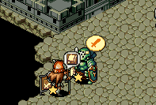

| 概要 | 情報 | ステージ攻略 |
| 地図 | テクニック | モナモナ攻略へ |
ゲームを開始する前に、Sユニットに水晶がある位置に待機するように指示を出します。そして、上の画像のようにその位置で家を作るように指示を出します。 家からSユニットが生まれたら、そのSユニットは上の画像の橋の上の待機させます。 Mユニットは家を壊し、もう一度家を作ります。 家から新しくSユニットが生まれたら、そのユニットには水晶を1個取るように指示を出します。それと同時にMユニットにも水晶を1個取るように指示を出します。 ここでMユニットとSユニットが合体しないように注意してください。また、水晶を取ると体重が1100gと1900g前後のMユニットができるはずです。 体重が1900g前後のユニットができたら、そのユニットにSユニットがいる橋を壊すように指示を出します。 落ちたSユニットは青に殺されます。 次に、体重が1900g前後だったユニットに上の画像で、カーソルを合わせている橋をDF：4程度まで破壊させます。 Sユニットを落としたら、体重が1900g前後のユニットに家を作るように指示を出します。そして生まれてきたSユニットに水晶を1個だけ取らせるように指示を出します。 その後、家を壊し、再度家を作り生まれてきたSユニットに・・・ と、体重1100gのユニットを大量に作ります。それぞれが合体しないようにうまく移動させてください。また、それと同時にお金もある程度集めるようにしてください。 全ての水晶を取ったら、家を壊してからまた作りSユニットを1体用意します。 その後、生まれてきたSユニット以外を上の画像の位置に集めLユニットを作ります。そして、SユニットのLユニットのいる位置の橋を壊すように指示を出します。  Lユニットが下に落ちたら、自国の家を作ります。その後、赤のMユニットを追跡します。 上に残ったSユニットには残ったお金を回収するように指示を出してください。 |
| 概要 | 情報 | ステージ攻略 |
| 地図 | テクニック | モナモナ攻略へ |